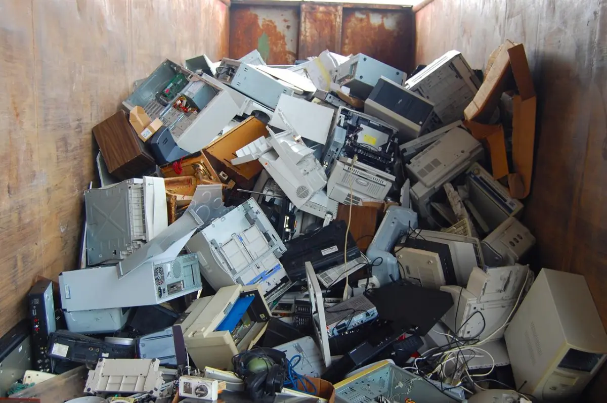
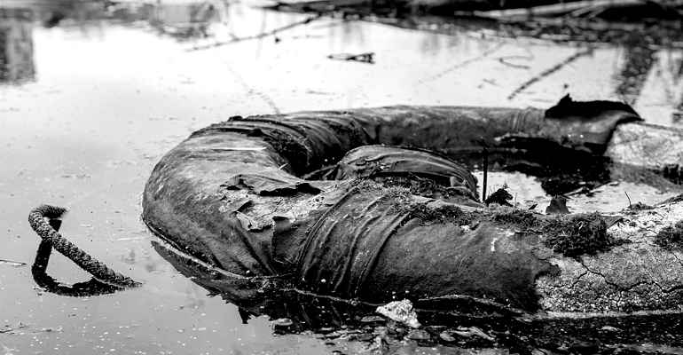

Eco-mafie
Ecomafie: cosa sono e in cosa consistono?

Nel 2018, a livello globale, sono stati prodotti circa 50 milioni di tonnellate di rifiuti elettronici, molti dei quali finiti nella rete delle ecomafie. Tra continenti-discarica e produzioni inesauribili, i Raee sono la nuova minaccia per l'ambiente
Nel 2018, a livello globale, sono stati prodotti circa 50 milioni di tonnellate di rifiuti elettronici, l’equivalente di 4.500 Torre Eiffel. Nel 2050 è stato calcolato che supereranno i 120 milioni, di pari passo con l’avanzare repente della tecnologia. Allo stato attuale, con un corretto smaltimento dei Raee si avrebbe un giro di affari di circa 62,5 miliardi di dollari: dovuti soprattutto alla presenza di ferro, oro, argento, rame e alluminio, ma anche di quei componenti cosiddetti terre rare (lantanio, ittrio, cerio, samario), ambìti in particolare dalle industrie militari e aerospaziali. Nonostante ciò, la percentuale di Raee correttamente smaltita in termini globali è solo del 20%.
Dove finiscono quindi i rifiuti che non vengono trattati? Malgrado l’Europa sia un modello da seguire, con il 27,5% di produzione di e-waste e il 35% di corretto smaltimento (contro il 15% dell’Asia a fronte di oltre 18 milioni di tonnellate di rifiuti, il 40,7% del totale), Holes in the Circular Economy, l’ultima indagine della Ban (Basel Action Network) in collaborazione con Greenpeace, evidenzia una tendenza piuttosto marcata dei Paesi membri alla pratica dell’export illegale di questi rifiuti. In testa tra i paesi del Vecchio Continente c’è l’Inghilterra, mentre per l’Italia è medaglia di legno e un quarto posto che lascia comunque molti sospetti. Del caso italiano, infatti, sono messi alla luce solo due esempi: un ecocentro di Pianiga, vicino a Venezia, e uno di un’azienda non identificata del milanese. Grazie ai microchip impiantati all’interno di due lotti di Raee è stato possibile per i ricercatori rintracciarli, dopo alcuni mesi, rispettivamente in Ghana e in Nigeria.
Rapporto Eco-mafie
 Come ogni anno dal 1994, in collaborazione con le forze dell’ordine, aggiorniamo il quadro delle attività della criminalità ambientale in Italia, sempre molto attiva, come evidenziano i numeri di Ecomafia 2023. I reati contri l’ambiente restano ben saldi sopra la soglia dei 30.000, esattamente sono 30.686, in lieve crescita rispetto al 2021 (+0,3%), alla media di 84 reati al giorno, 3,5 ogni ora. Crescono anche gli illeciti amministrativi che toccano quota 67.030 (con un incremento sul 2021 del +13,1%): sommando queste due voci – reati e illeciti amministrativi – le violazioni delle norme poste a tutela dell’ambiente sfiorano quota 100.000 (97.716 quelle contestate, alla media di 268 al giorno, 11 ogni ora).